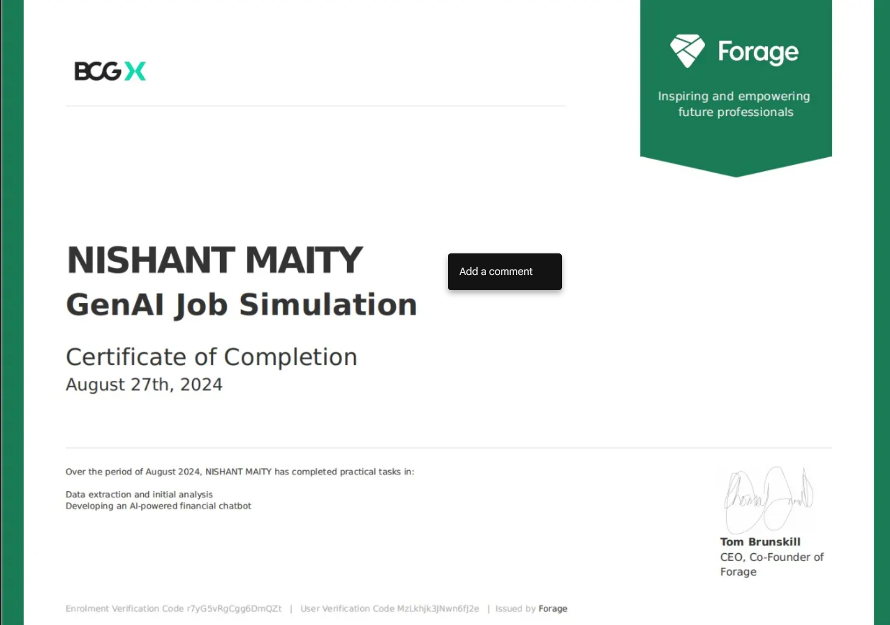
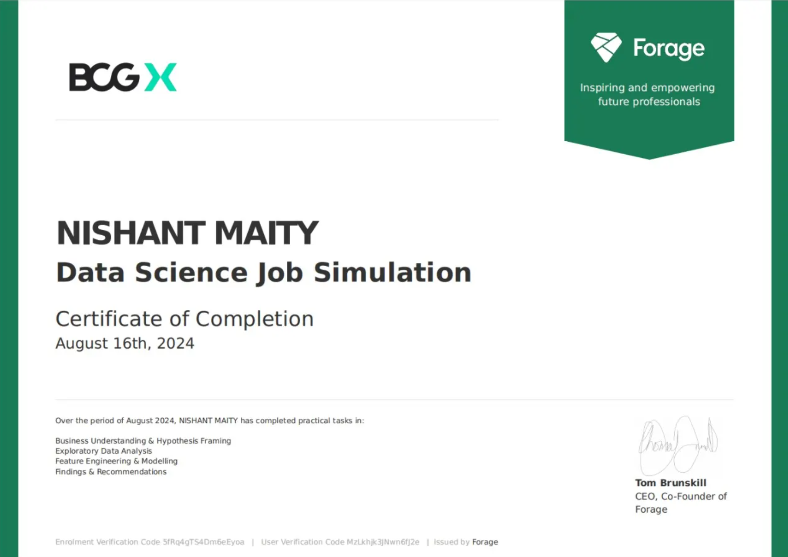
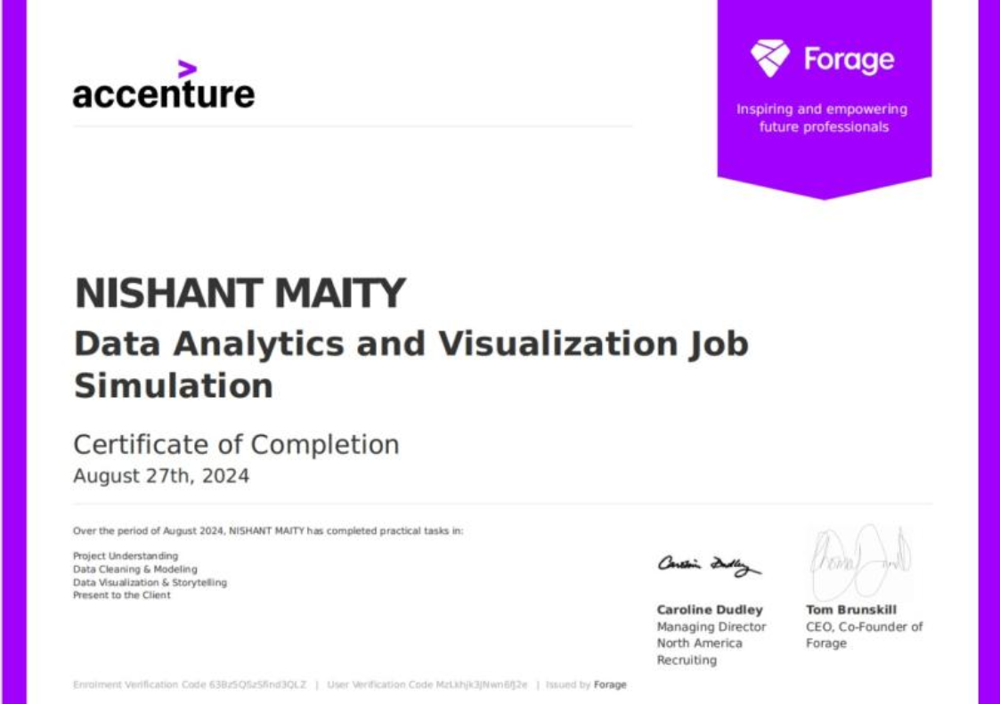

Work Experiance
Data Science Intern
- Performed data analysis, EDA, and built machine learning models using Python, Pandas, NumPy, and Scikit-learn.
- Created automated EDA reports and developed predictive models to support business decisions.
- Optimized ML models and improved data visualization for effective communication of insights.
Key Prjects
- Laptop Price Prediction: ML model using XGBoost & Random Forest; deployed with Streamlit.
- OCD Patient Analysis: EDA + ML for health data insights; evaluated with accuracy, skewness, kurtosis.
- Netflix Data Analysis: Explored trends in content using Pandas, Matplotlib, Seaborn.

Generative Ai Job Simulation
Worked on developing an AI-powered financial chatbot during a job simulation with BCG's GenAI Consulting team, gaining hands-on experience in Python, data analysis, and NLP in a real-world context.
- Practiced Python with libraries like pandas for data manipulation and analysis.
- Utilized Excel and Python to process financial datasets.
- Applied NLP techniques and rule-based logic on 10-K and 10-Q reports.
- Built a chatbot prototype providing user-friendly financial insights and analysis.

Data Science Job Simulation
Worked on a customer churn analysis simulation with XYZ Analytics, applying Python-based data science techniques and delivering an executive summary to present actionable insights.
- Analyzed client data using Python, Pandas, and NumPy with visualizations for trends.
- Built and optimized a Random Forest model with 85% accuracy in churn prediction.
- Delivered an executive summary with actionable insights for leadership decisions.

Data Analysis job Simulation
Completed a data analysis simulation with Accenture, advising a hypothetical social media client through data-driven insights and presentations.
- Cleaned, modeled, and analyzed 7 datasets to identify content trends for strategic decisions.
- Created a PowerPoint deck and video presentation to communicate insights to stakeholders.
- Gained hands-on experience in data analysis, storytelling, and client-focused presentations.
